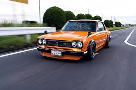
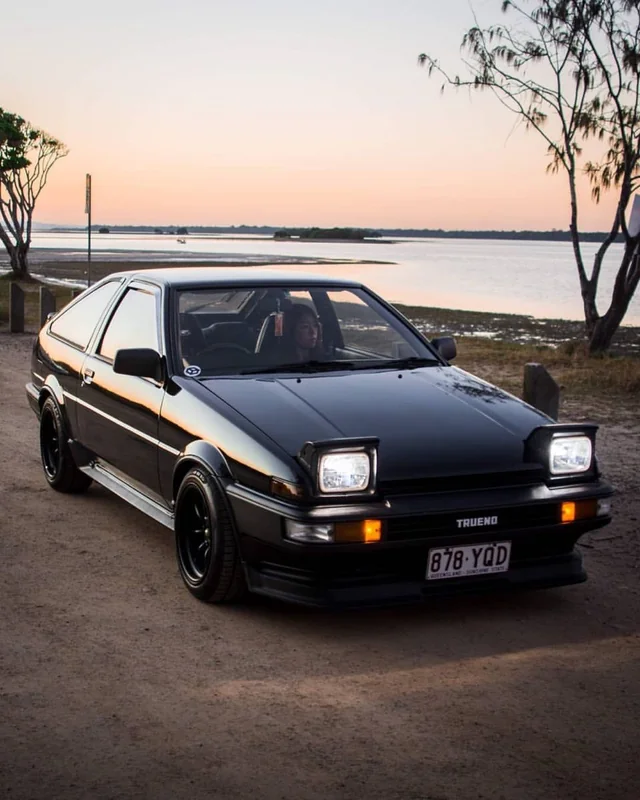

The story of JDM (Japanese Domestic Market) cars begins in the post-war era, where Japan's automotive industry started to rebuild and redefine itself. After World War II, Japan faced a dire economic situation and infrastructural collapse. Despite the challenges, the nation's resilience and focus on innovation laid the groundwork for a technological renaissance. In the 1950s and early 1960s, Japanese automakers began producing small, practical vehicles aimed at meeting the everyday needs of the Japanese population. These cars emphasized efficiency, affordability, and reliability — values that quickly became the hallmark of Japanese engineering. In the 1960s, companies like Toyota, Nissan (then under the Datsun name), and Honda began rising in prominence both domestically and abroad. Toyota's dedication to quality manufacturing and process efficiency, later known as the Toyota Production System, revolutionized the industry. Honda, originally a motorcycle manufacturer, expanded into automobile production with a focus on engineering precision and mechanical innovation. Nissan built a reputation for combining style and performance with practicality, quickly earning respect in global markets.

As Japanese cars gained traction internationally, the 1973 oil crisis played a significant role in shifting global consumer preference toward more economical vehicles. Japanese cars, known for their superior fuel efficiency, surged in popularity. This period marked the foundation of Japan's reputation for engineering excellence and innovation. The country's cars were no longer just affordable alternatives; they were becoming icons in their own right. By the end of the 1980s, Japanese manufacturers had solidified their presence in global markets. Their cars were no longer viewed solely as budget options but were admired for their build quality, forward-thinking technology, and reliability. The early Nissan Skyline GT-R models, like the C10 "Hakosuka," gained cult status among enthusiasts and hinted at the performance capabilities that would define the next generation of JDM icons.